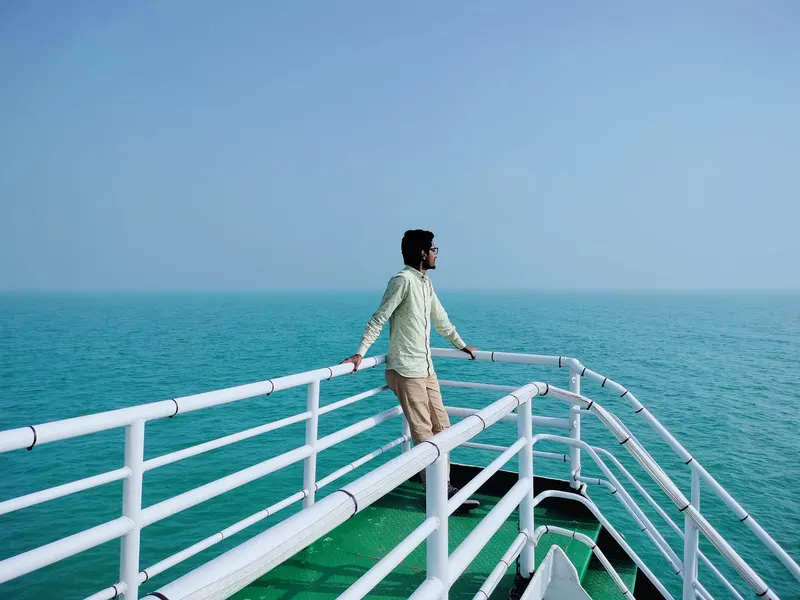

Based in Bangladesh
Capturing Moments. Expressing Emotions.
Photographer | Bangla Reciter | Creative Artist
আলো, মুহূর্ত আর শব্দের মাঝে নিজের গল্প খুঁজে ফিরি।

About
Beyond the Lens & Beyond Words.
“I believe every photograph carries a story, and every poem holds an emotion. Through photography and Bangla recitation, I explore the beauty of human experiences, nature, culture, and expression.”
প্রতিটি ছবির ভেতরে লুকিয়ে থাকে একটি গল্প, আর প্রতিটি কবিতায় থাকে একটি অনুভূতি। আলোকচিত্র আর বাংলা আবৃত্তির মধ্য দিয়ে আমি খুঁজে ফিরি মানুষের অভিজ্ঞতা, প্রকৃতি, সংস্কৃতি আর প্রকাশের সৌন্দর্য।
Through the Lens
Portraits, landscapes and everyday life — photographs that hold on to a feeling as much as a scene.
Through the Voice
Bangla recitation that gives breath to the poetry of Rabindranath, Nazrul, Jibanananda and more.
Philosophy
Look slowly, listen closely, and let the moment speak before the artist does.
Bangla Recitation
কবিতার আবেগ, কণ্ঠের প্রকাশ
Words become emotions. Poetry becomes an experience.
Featured Recitation
Recitation Library
Browse by poet. Select any recitation to play it in the player above.
Video Recitations
Recitations performed on camera. Tap any reel to watch.
On Stage & In Studio
Featured Poetry
Poem titles only — full texts belong to their poets and publishers.
Portfolio
Through My Lens
Every frame captures a moment. Every moment tells a story.
Sample frames — Mijan’s photographs to be added
Featured Projects
Selected Stories
Longer photographic series — each one a place, a people, a season.
Achievements & Experiences
Recognition & Journey
Services & Collaboration
Let’s Create Something Meaningful
Available for commissions, programmes and collaborations. Tell me about your idea — I’ll reply with availability.
Journal
Stories & Thoughts
Photography stories, creative thoughts, Bangla literature, recitation experiences and travel notes.
Testimonials
Kind Words
Contact
Have a Story to Share?
For photography projects, recitation invitations, cultural collaborations, or simply a conversation, feel free to reach out.